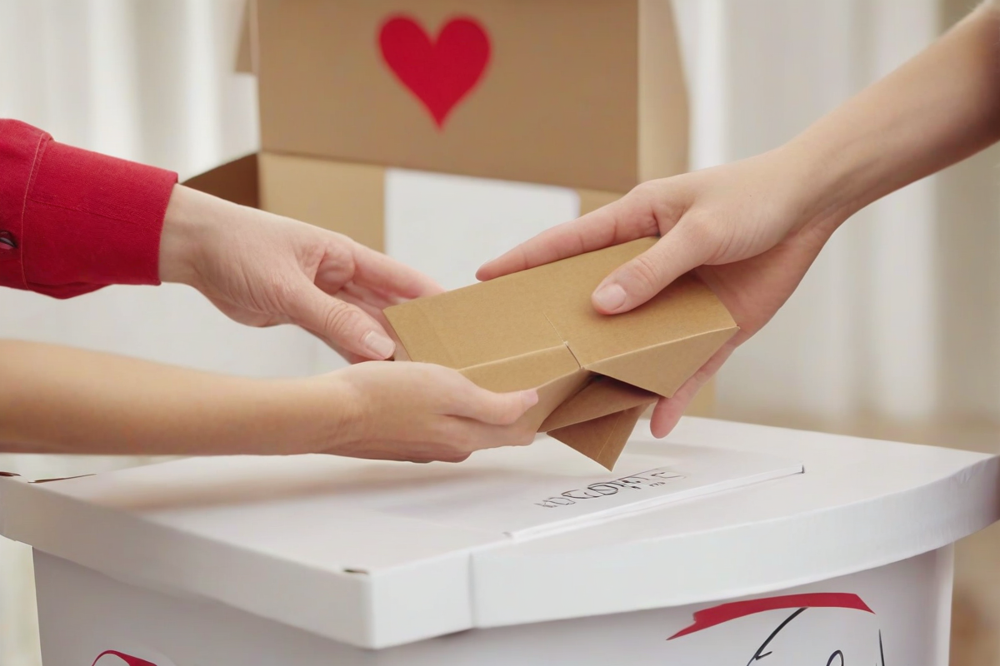

Wsparcie i pomoc społeczna
Indywidualne i grupowe wsparcie dla osób w kryzysach życiowych, doradztwo oraz asystentura rodzinna.

Fundacja Instytut Badawczo-Edukacyjny Meritum
Odkryj w sobie potencjał – my pomożemy Ci go rozwinąć. Łączymy edukację, badania i realną pomoc społeczną.
O fundacji
Jesteśmy organizacją, dla której człowiek i jego edukacja stanowią najwyższą wartość. Wspieramy rodziny i osoby znajdujące się w trudnych sytuacjach życiowych, budując rozwiązania oparte na empatii oraz wiedzy.
Nasza siedziba znajduje się w Zielonej Górze, ale skala naszych ambicji jest ogólnopolska. Chcemy skutecznie wyrównywać szanse edukacyjne i społeczne.

Misja i wizja
Naszym głównym celem jest wyrównywanie szans edukacyjnych i społecznych. Tworzymy nowoczesne narzędzia wsparcia dla osób i rodzin, które najbardziej tego potrzebują.

Nasze obszary działań
Indywidualne i grupowe wsparcie dla osób w kryzysach życiowych, doradztwo oraz asystentura rodzinna.

Warsztaty, szkolenia i programy badawcze promujące naukę, rozwój osobisty oraz kompetencje rynku pracy.

Działania zwiększające dostępność edukacji dla dzieci i młodzieży ze środowisk defaworyzowanych.

Analizy naukowe wspierające efektywność programów pomocy społecznej i decyzje oparte na danych.
Jak możesz pomóc

Przekaż jednorazową wpłatę na działania statutowe fundacji.
Przekaż darowiznę →
Zostań ekspertem, badaczem lub doradcą w naszych programach.
Dołącz do wolontariatu →
Realizuj z nami cele CSR i wzmacniaj społeczną odpowiedzialność biznesu.
Nawiąż partnerstwo →„Nawet najmniejsza pomoc jest wielkim krokiem ku lepszej przyszłości dla kogoś, kto stracił nadzieję.”
Transparentność
Transparentność jest naszym priorytetem. Publikujemy informacje rejestrowe, dbamy o etykę i rzetelność procesów oraz komunikujemy cele naszych działań.

Kontakt i współpraca
Fundacja Instytut Badawczo-Edukacyjny Meritum
ul. Sowia 9, 65-507 Zielona Góra, Polska